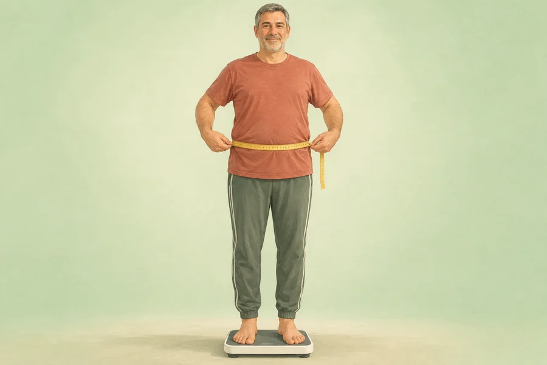

כדי לראות כמה קלוריות נשארו להיום, אפשר להגדיר יעד יומי.
נותרו היום
כאן יופיעו הארוחות שתוסיף היום.
טרם נקלטו קלוריות מאימון להיום

מצלמים ארוחה או מחפשים במאגר, ורואים מה אכלת ואיך התקדמת היום.
בכמה צעדים נציע לך יעד קלוריות, ואפשר יהיה לבחור את שעות הארוחות.
הזז את הסמן או הקלד גובה בסנטימטרים.
הזז את הסמן או הקלד משקל בקילוגרמים.
מדד BMI
חישוב היעד מיועד למבוגרים מחוץ לתקופת היריון או הנקה.
בחר את השעות שנוחות לך. אפשר להשאיר שדות ריקים.
BMI מחושב מהגובה והמשקל ומשמש מדד כללי.
בחר את השעות שנוחות לך. כדי להסיר שעה, אפשר לנקות את השדה שלה.
ימים עם ארוחות או אימונים שמורים יופיעו כאן.
לא נשמר יעד לאותו יום. היתרה מחושבת לפי היעד הנוכחי.
אין ארוחות רשומות ביום הזה.
אפשר להזין גם חצי כפית. כל כפית מוסיפה כ־15 קלוריות.
אם מופיע חלון של LockStar לגבי הסוללה, אפשר ללחוץ Cancel ולבדוק את התצוגה לאחר נעילה.
ביישום ״בריאות״ באייפון, פתח את הפרופיל, בחר ״ייצוא כל נתוני הבריאות״ ושמור את הקובץ דרך ״קבצים״. בחר אותו כאן. הקובץ נקרא במכשיר.
בחר את אפליקציית הכושר מהשעון או מהטלפון ואשר קריאת אימונים.
ליתרה מתווספות קלוריות ששויכו לאימונים מתועדים.
ההזנה מחליפה את סך קלוריות האימונים להיום.